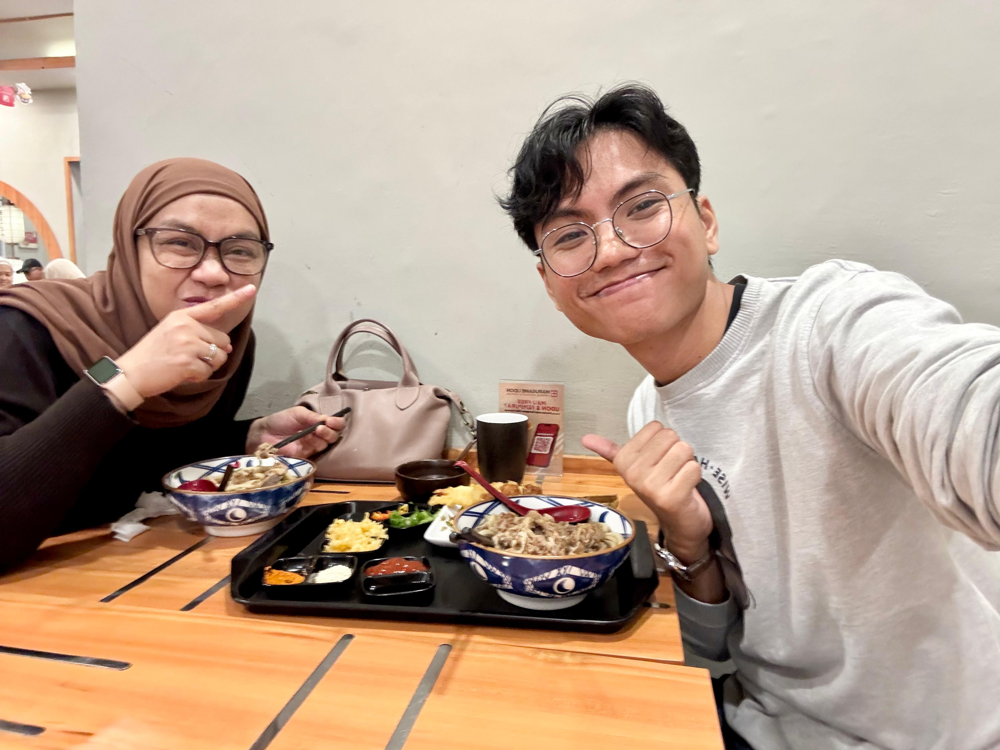
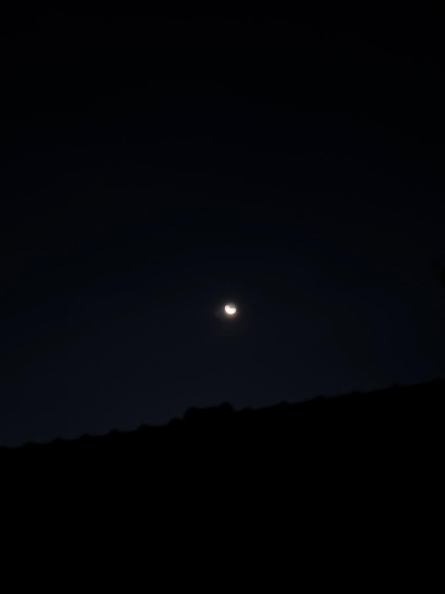
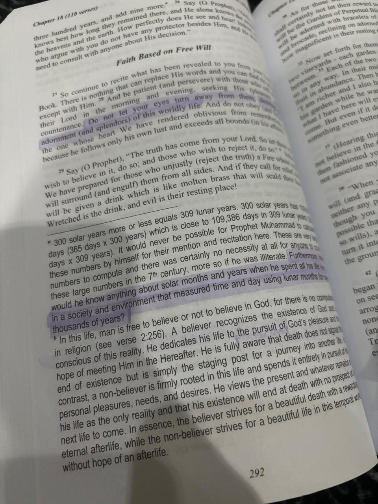

dear terimakaashi,
semoga aku gak salah ingat tanggal, 18 maret, tapi sebenernya di pesan ini aku mau memulai dengan ikut berduka 🙆🏻♂️ terima kasih sudah ceritain tentang eyang kamu, aku ikut berdoa semoga diberikan ketenangan dan ketabahan untuk kamu dan keluarga walaupun waktunya sudah terlewati 🤲🏻 aku harap oli merasa lebih tenang ✨
aku mau update tentang marugameee wkwkwkwk 😬😂

jajanggg, aku ngirim foto ini buat ngasih tau kamu juga kalau akhirnya aku bisa makan marugame udon, plus bareng ibu makannyaa, alhamdulillah aku senang! 😂 jadi aku merasa ingin membagikan kebahagiaan ini (cerita tentang mau makan marugame udon sudah tamat wkwkw)
aku juga gak banyak ambil foto sih beberapa hari kebelakang tapii aku mau photo dump beberapa disini buat aku share:

ini langit malam yang keliatan dari halaman jemuran rumah aku wkwkwk, kalau liat langsung waktu itu terang banget dan bersih banget langitnya 🌛

ini fotonya aku ambil waktu aku lagi itikaf di al-irsyad, aku namatin belajar isi yang ada di surah ini malam itu, ini lucu dan aku mau share soalnya Allah ngasih jalan lucu banget 😬 aku kasih cerita dulu kayaknya ya 😭😂
jadi siangnya aku sebenernya riset dulu buat liat siapa yang ngisi qiyamul lail di al-irsyad malam itu, nahh tapi ternyata al-irsyad itu sosmednya gak dikelola dengan bagus 😭 ada sih sosmed buat yang kajiannya, tapi buat yang umumnya itu kurang banget informasinya 🤔 nah alasan aku riset itu tadinya aku dilema mau ke salman itb atau ke al-irsyad dulu, aku belum pernah itikaf di salman itb salah satu alasannya, terus kenapa aku riset al-irsyad dulu itu karena aku ngincer salah satu ustadz yang ngisi, aku gak tau siapa namanya sampai sekarang, tapi beliau yang aku rasa cukup berperan baik sekali dalam proses beragama aku terutama di momen bulan ramadhan 🙂↕️
terus jadinya aku memutuskan buat ke al-irsyad tanpa tau ustadz siapa yang ngisi malam itu, malam itu aku berangkat sama ibu aku, dan firasy 😂 singkat cerita, firasy itu rumah neneknya deket rumah aku, sekitar 10 menit nyampe, terus tahun lalu dia ikut itikaf bareng aku di al-irsyad juga, jadi kayak ritual juga sih dia ikut bareng itu akhirnya wkwkwk, bertiga pula sama tahun ini alhamdulillah 🙂↕️
bagian lucunya adalah, malam itu ustadz yang ngisi ternyata orang yang aku cari, aku gak tau nama panjangnya apa, tapi pas aku tanya salah satu yang ngurusin itikaf itu, beliau namanya gus rofiq (namanya umum, terus gatau nama panjangnya, bingung nyarinya 🤔)
di tahun ini berarti, ini ketiga kalinya aku itikaf di al-irsyad dan beliau yang ngisi malam itu tanpa aku merencanakan buat mencari beliau, beliau cukup berperan baik, setiap tahunnya jadi salah satu turning point hidup aku 😂 karena salah satu agenda qiyamul lailnya itu ada sholat taubat dan sholat hajat, dan beliau jadi imamnya sangat menyentuh hati, at least itu yang aku rasain, Allah ngasih jalan yang lucu banget buat aku, ga ada yang namanya kebetulan lagi kalau gini mah wkwkwk 😬
aku bersyukur sekali 🙆🏻♂️🙂↕️ terima kasih sudah membaca pesannya sampai sini :)
terima kasih juga karena sudah hadir di hidup aku 🐈⬛
dari mochamad thiesa nabil